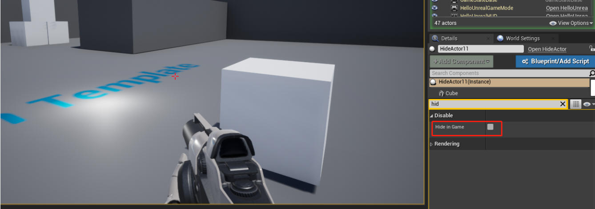
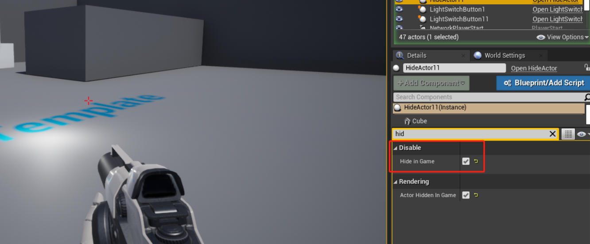

隐藏并禁用的 Actor
原教程是基于 UE 4.18，这里是基于 UE 4.25
接上一节，要在游戏中完全隐藏角色，你必须做三件事。
- 你必须禁用它的碰撞，
- 禁用它的节拍，
- 并将其隐藏在游戏中。
您可以将代码添加到任何 actor 子类实例上。对于本例，我创建了一个单独的 actor 来演示它的用途。
创建一个名为 HideActor 的 actor。在头文件中我创建了两个：通过 bool HideInGame 来跟踪，如果我们想禁用 actor 的话，并在 void DisableActor 运行所有我们需要禁用的元素。我们将这两个变量放在 Disable 类别中，以使它们与 actor 的其他属性区分开
HideActor.h
#pragma once
#include "CoreMinimal.h"
#include "GameFramework/Actorh"
#include "HideActor.generatedh"
UCLASS()
class UNREALCPP_APIAHideActor : public AActor
{
GENERATED_BODY()
protected:
// Called when the game starts or when spawned
virtual void BeginPlay() override;
public:
// Called every frame
virtual void Tick(float DeltaTime) override;
UPROPERTY(EditAnywhere, Category = "Disable")
bool HideInGame;
UFUNCTION(BlueprintCallable, Category = "Disable")
void DisableActor(bool toHide);
};
在 BeginPlay() 中，我们检查 HideInGame 是否为真。如果为真，则运行 DisableActor() 。DisableActor() 隐藏actor，禁用它的冲突，并禁用它运行每一帧。
HideActor.cpp
#include "HideActor.h"
// Called when the gamestarts or when spawned
void AHideActor::BeginPlay()
{
Super::BeginPlay();
if (HideInGame)
{
DisableActor(HideInGame);
}
}
// Called every frame
void AHideActor::Tick(floatDeltaTime)
{
Super::Tick(DeltaTime);
}
void AHideActor::DisableActo(bool toHide)
{
// Hides visible components
SetActorHiddenInGame(toHide);
// Disables collision components
SetActorEnableCollision(false);
// Stops the Actor from ticking
SetActorTickEnabled(false);
}
效果演示
为了方便演示，为 actor 添加了 cube 组件：

当 Hide In Game 为 false 时运行游戏：

当 Hide In Game 为 true 时运行游戏：
